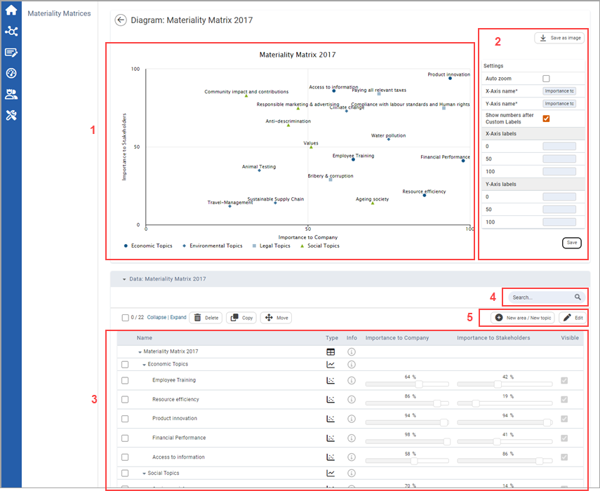

in the upper right corner of the Materiality Matrix page to create a new materiality matrix.
in the upper right corner of the Materiality Matrix page to create a new materiality matrix.In the stakeholder area's Materiality Matrices module you can model the importance of individual sustainability issues from the company's perspective and your stakeholders' perspective in a clear manner using a standardized system of coordinates – a so-called matrix representation. Summarizing individual topics into subject areas helps you in the subsequent analysis and strategy development.
Click in the upper right corner of the Materiality Matrix page to create a new materiality matrix.

| 1 | Here you can see the materiality matrix with its areas and data points (topics). The areas are listed in the legend. You can toggle them by clicking on the entries. |
| 2 | Here you can edit the axis names and add labels to the intercepts. Furthermore, Auto zoom can be activated. Click to save the materiality matrix as an image. |
| 3 | Here you can see the areas and topics . Select the checkboxes in combination with the action icons to delete the selected areas or topics ( ), copy an area or topic ( ), copy an area or topic ( ), or move an area or topic (). ), or move an area or topic (). |
| 4 | Use the Search function to browse through the displayed entries by typing any term into the search field. You can also Collapse and Expand all entries. |
| 5 | Click  New area/New topic to create a new area or a new topic. Click New area/New topic to create a new area or a new topic. Click  to edit the areas and topics including the percentage and visibility of each topic in the matrix. Click to edit the areas and topics including the percentage and visibility of each topic in the matrix. Click  to save your changes are saved by clicking or click to save your changes are saved by clicking or click  to cancel them (not shown here). to cancel them (not shown here). |